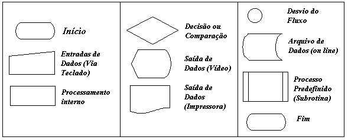

Introdução à Lógica de Programação
Com o Uso de Fluxogramas
Comentário:
Antes da codificação de um programa é necessário uma análise detalhada do problema proposto, procurando-se entender completamente a técnica empregada para a sua resolução; cumprida esta etapa, procura-se representar logicamente todo o procedimento através dos algoritmos ou fluxogramas, estes elementos serão de fundamental importância na busca de possíveis erros de lógica e em outras futuras manutenções do programa. É importante salientar que, elaborar programas de lógicas complexas sem o uso dos fluxogramas ou algorítmos é praticamente impossível (em certos casos totalmente impossível).
Devido as sofisticadas ferramentas de programação encontradas atualmente, muitos tem deixado de lado a utilização de uma organização sistemática do processo de desenvolvimento de programas, no entanto esta conduta, acredito, dificulta o desenvolvimento do raciocínio lógico, além de tornar obscuro, principalmente aos menos experientes, a separação dos procedimentos de entrada, processamento e saída dos dados(conceitos fundamentais para o desenvolvimento de um programa).
1 - Significado e Regras Para a Construção de um Fluxograma de Programação
O Fluxograma é a representação gráfica da resolução de um problema.
Não existem regras para a construção de um fluxograma, ele apenas deve ser claro o suficiente para a perfeita compreensão da lógica do programa, de modo que facilitará a codificação em um linguagem escolhida.
2 - Principais Símbolos Utilizados na Elaboração de Fluxogramas
Os principais símbolos utilizados neste pequeno curso serão:

Existem outros símbolos adotados pela ANSI(American National Standards Institute) porém menos utilizados na maioria das vezes.

| Página Anterior | Próxima Página |